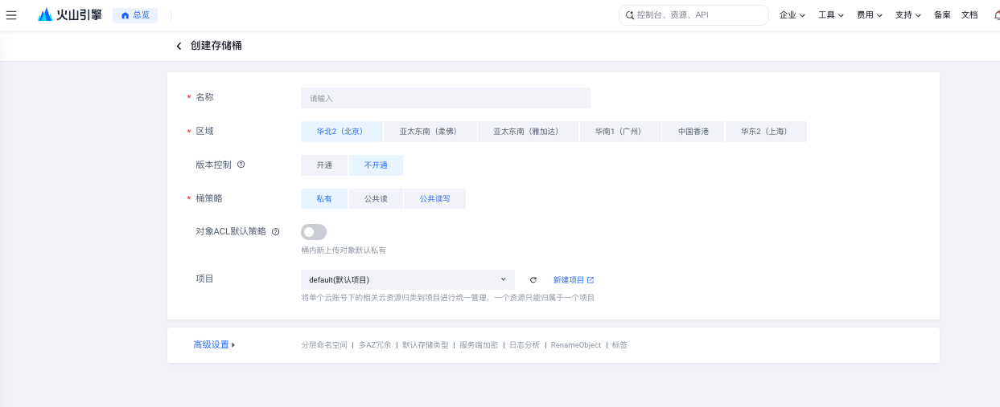
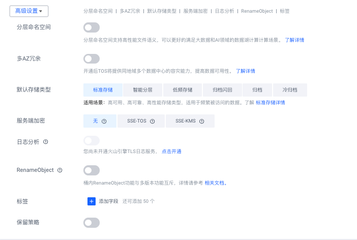

知识蒸馏器：豆包 ASR 新用户配置教程
适用：Mac 版知识蒸馏器，豆包录音文件识别模型 2.0。配图来自 2026 年 9 月 6 日的配置教程；应用操作已对齐当前四步向导，服务标识及存储桶设置已于 2026 年 9 月 9 日核对官方文档。控制台菜单以后可能调整。
配置完成后，知识蒸馏器会把视频音轨上传到私有 TOS 桶，交给豆包转成文字，取得结果后清理云端临时音频。转写后的文字整理与知识提炼使用另行配置的语言模型。
豆包语音和 TOS 可能产生用量费用，请先查看自己的额度、价格和余额。教程配图只选用不含密钥值、APP ID、个人桶名或账号 ID 的页面，不包含个人浏览器标签页。
先分清：语音识别、TOS 和大模型
| 服务 | 在知识蒸馏器里做什么 | 在哪里配置 |
|---|---|---|
| ASR（这里是豆包语音） | 把视频里的声音转成文字 | 设置 → 模型配置 → ASR |
| TOS（对象存储） | 临时存放音频，让豆包语音读取 | 豆包配置向导第 3 步 |
| LLM（语言模型） | 阅读文字、提炼知识，参与整理 | 设置 → 模型配置 → LLM |
TOS 不是大模型，也不负责转写。 选择豆包语音不要求把 LLM 也换成豆包：保留已配置的语言模型即可。三者的密钥不能混填。
先看懂：到底需要配置什么
| 名称 | 用途 | 获取位置 | 填到应用哪里 |
|---|---|---|---|
| 豆包语音 API Key | 调用录音转文字服务 | 豆包语音控制台 → API Key | 豆包 API Key |
| TOS Access Key ID（AK） | 标识访问存储桶的身份 | 访问控制 → API 访问密钥 → Access Key | TOS → Access Key ID |
| TOS Secret Access Key（SK） | 与 AK 配对，签名访问存储桶 | 与 AK 一起创建 | TOS → Secret Access Key |
| Bucket | 临时音频存放的桶 | 对象存储 TOS | TOS → Bucket |
| Region | 桶所在区域 | 桶详情页 | TOS → Region |
不要把豆包 API Key 填到 TOS 的 AK 或 SK 栏。AK 和 SK 必须是同一次创建得到的一对。
另外，下面几个名字容易混淆：
- 旧版豆包控制台里的 APP ID，不是本应用需要填写的 API Key。
- 名为
default的豆包应用，与 TOS 的default（默认项目）不是一回事。项目只是资源分组，不要求为每个豆包应用单独建桶。 - 豆包 API Key 页面里的“默认体验中心使用”，只影响控制台体验中心，不会自动同步到知识蒸馏器。
- IAM「API 访问密钥」页面下方也可能有一个 API Key 区域。配置 TOS 时使用上方的 Access Key 区域。
整个过程按这个顺序进行：
开通豆包语音 → 保存语音 API Key → 创建私有 TOS 桶 → 设置自动清理 → 准备 TOS AK/SK → 在应用中保存并启用 → 短视频验证。
1. 开通豆包录音文件识别 2.0
- 登录火山引擎控制台，搜索并进入「豆包语音」。
- 如果看到旧版「应用管理」及 APP ID 列表，点击「立即体验」进入新版控制台。
- 在「开通管理」中找到 录音文件识别 2.0，按页面流程开通。
- 确认该服务显示 已开通。
本应用对应资源标识 volc.seedasr.auc。不要误选流式语音识别、语音合成或闲时识别等其他服务。
完成标志：录音文件识别 2.0 显示已开通。
2. 创建并保存豆包语音 API Key
- 在豆包语音控制台左侧进入「API Key」。
- 创建一条专用密钥，名称可填写
知识蒸馏器-ASR。已有专用密钥可以直接使用。 - 确认状态为 启用，复制密钥。
- 打开知识蒸馏器 → 设置 → 模型配置 → ASR，选择 豆包录音文件识别模型 2.0。
- 在向导第 2 步将密钥粘贴到「豆包语音 API Key」，点击 保存并继续。
不要把密钥发到聊天、教程或截图中。应用不会回显已保存的密钥，所以保存后输入框看起来仍为空是正常的。
完成标志：应用显示豆包 API Key 已保存。此时还没有验证云端调用，也不代表已切换到这条密钥。
3. 创建专用 TOS 存储桶
进入「对象存储 TOS」→「桶列表」→「创建存储桶」。建议使用专用临时桶，便于设置自动清理，避免影响其他文件。

上图展示的是未填写的创建页，默认选中了北京。地域按实际使用选择，广州只是本教程示例，不是应用的必选地域。已有可用桶无需为了与截图一致而重建。
| 字段 | 填写方式 |
|---|---|
| 名称 | 例如 my-distiller-asr-temp-20260906；若已被占用，换一个名称 |
| 区域 | 选择适用地域，例如华南1（广州）；记住实际选择的地域 |
| 版本控制 | 不开通 |
| 桶策略 | 私有 |
| 对象 ACL 默认策略 | 保持关闭 |
| 项目 | 可保留 default（默认项目） |
桶名示例不应直接当成你的实际桶名。创建后请复制自己桶详情页里的完整名称。
高级设置

| 选项 | 本教程的设置 |
|---|---|
| 分层命名空间 | 关闭 |
| 多 AZ 冗余 | 关闭 |
| 默认存储类型 | 标准存储 |
| 服务端加密 | 保持页面默认「无」 |
| 日志分析 | 关闭 |
| RenameObject | 关闭 |
| 标签 | 暂时不填 |
| 保留策略 | 关闭 |
这些设置适用于此处的临时音频用途。点击「创建」，进入桶概览，确认桶名、区域和默认存储类型。
完成标志：能进入桶详情页；地域与自己的选择一致，默认存储类型为标准存储。
4. 设置 5 天自动清理
“保留策略”不是“自动删除”。 保留策略（WORM）用于在规定期限内限制删除或覆盖；自动清理应使用「生命周期」。
在桶概览找到「生命周期」旁的「设置」，创建规则：
| 项目 | 设置 |
|---|---|
| 规则名称 | 临时音频5天自动清理 |
| 状态 | 启用 |
| 影响范围 | 整个存储桶，前提是该桶专门用于临时音频 |
| 标签、文件大小条件 | 不设置 |
| Not | 关闭 |
| 生效策略 | 最后修改时间 |
| 文件最新版本过期策略 | 开启，选择 指定天数 |
| 所有“沉降至……”选项 | 全部不勾选 |
| “后，将自动删除” | 勾选，并把默认 630 天改成 5 天 |
| 文件历史版本过期策略 | 关闭，本教程未开启版本控制 |
| 分片过期策略 | 本次保持关闭 |
提交前确认文字为：文件最后修改时间 5 天后，将自动删除。点击「确定」，在规则列表确认已启用。
应用转写成功后会主动删除临时音频；生命周期用于清理失败等情况下留下的对象。它不判断任务是否已经完成，超过期限的文件即使仍需使用，也可能被删除。后台清理并不保证恰好在第 120 小时执行。
完成标志：生命周期规则列表中存在已启用的 5 天删除规则。
5. 准备 TOS Access Key 和权限
在火山控制台进入「访问控制」→「API 访问密钥」。
- 找到上半部分 Access Key 区域。
- 已有有效且身份明确的 AK/SK 可以复用；没有则点击 创建 Access Key，完成页面要求的身份验证。
- 将同一次创建得到的 Access Key ID 和 Secret Access Key 分别填写到应用 TOS 对应输入框，不要错位或混用旧值。
- 若由管理员提供子用户密钥，应确认该身份有访问目标桶的权限。
权限应覆盖什么
应用需要检查对象是否存在、上传音频、读取音频以及删除自己上传的临时对象。管理员应按目标桶及 knowledge-distiller/asr/ 对象前缀配置所需权限；用于诊断的桶信息检查也需要相应权限。
不必把桶改为公共读或公共读写来解决权限错误。 应用会生成带签名的临时读取链接，供豆包访问私有音频。
出现拒绝访问时，检查密钥所属身份、桶所属账号、IAM 授权及桶策略。不要直接套用全账号管理员权限，也不要仅凭对不存在对象的一次 403 就认定某一项权限缺失。
新建存储桶本身不会修复无效 AK，也不会自动为其他身份授权。密钥列表为空只说明当前页面没有列出该身份的密钥，不能据此判断其他身份下是否存在密钥。
完成标志：拥有一对有效 AK/SK，并确认对应身份可访问这个桶。
6. 在知识蒸馏器中保存并启用
进入「设置 → 模型配置 → ASR」，选择豆包方案，按四步向导继续。
- 第 1 步开通录音文件识别服务，第 2 步保存语音 API Key。
- 第 3 步填写同一组 TOS AK/SK，点击 读取我的存储桶，选择刚创建的桶，再点击 使用所选桶并继续。地域会自动带出。
- 如果身份只有指定桶权限、无法读取桶列表，展开 无法读取列表，手动填写，填写桶名、真实地域和配对的 AK/SK，再保存。
- 第 4 步检查信息，点击 检查配置并启用；已经使用豆包时按钮显示 重新检查并启用。
Bucket 只填桶名，不填网址或目录；Region 使用实际桶的地域代码。选择广州时是 cn-guangzhou，其他区域必须填写对应代码。
最后一步不能省略：保存密钥只更新待启用配置，不会更换当前任务使用的方案。以后更换密钥或存储桶，也要在第 4 步重新检查并启用。
完成标志：当前 ASR 方案显示豆包。这里的“已配置”仍不等于云端认证或识别成功。
7. 用一条短视频验证
先选一条有清晰人声的短视频投递，观察处理结果。真实调用会消耗相应额度或产生费用。
成功链路是：
取得音轨 → 上传 TOS → 豆包转写 → 取得文字结果 → 删除临时对象 → 语言模型整理与提炼。
首次验证时应区分两件事：
- 豆包 ASR 配置成功：上传、转写和结果获取完成，临时对象清理正常。
- 整篇蒸馏成功：还需要后续语言模型整理和知识提炼成功。
后续出现“语言模型本次调用失败”，不应直接归因于豆包；先确认失败发生在哪个阶段。正常清理后桶内文件消失是预期行为，桶内暂时没文件也不能单独证明任务成功。
如需排障，可先让维护者做只读检查：桶信息请求成功、对不存在对象的检查正常返回 404，可以帮助确认上传前的访问问题是否解决，但不能代替真实上传、转写和删除验证。
8. 在 Mac 上管理已保存的密钥
用 Spotlight 搜索并打开 钥匙串访问，搜索 知识蒸馏器。新版条目名称示例：
知识蒸馏器｜豆包语音 API｜当前启用｜短编号知识蒸馏器｜TOS 存储凭据｜当前启用｜你的桶名｜短编号知识蒸馏器｜语言模型 API｜当前启用｜型号｜短编号知识蒸馏器｜豆包语音 API｜已保存未启用｜短编号
名称中的“当前启用”表示应用的绑定状态，不代表服务一定可用。无法搜索到中文名称的旧版本，可搜索服务名 com.knowledge-distiller.credentials。
“已替换”或“未被当前配置引用”也不一定意味着可以立即删除：其他运行实例或历史任务仍可能引用它。先确认用途，再清理。删除 Mac 中的条目不会代替火山控制台的撤销密钥操作。
常见问题速查
| 现象 | 优先检查 |
|---|---|
| API Key 已保存，仍在使用旧密钥 | 是否点击了向导第 4 步的「检查配置并启用」 |
TOS 返回 InvalidAccessKeyId |
是否填错类型、使用失效 AK，或 AK/SK 不属于同一组；不要拿豆包 API Key 当 AK |
TOS 返回 AccessDenied / 403 |
密钥身份、目标桶、区域、IAM 权限与桶策略；不要反复盲目重建密钥 |
| 豆包认证失败 | 语音 API Key 是否有效、录音文件识别 2.0 是否开通、当前是否已启用新配置 |
| TOS 已保存但访问旧桶 | 保存后是否重新启用；Bucket 是否为完整新桶名 |
| 输入框保存后为空 | 密钥不回显是正常行为，看保存与启用状态 |
| 转写成功但整理失败 | 检查语言模型阶段，不要重新配置豆包 |
| 文件没有在精确第 5 天消失 | 生命周期由后台异步执行；检查规则是否启用，以及自动删除那一行是否真正勾选 |
| 首次投递出现浏览器调试授权 | 这是当前来源采集使用 Chrome 的授权，与豆包或 TOS 密钥无关；应用重启后可能再次请求 |
官方参考
本教程与配图随应用提供，可离线阅读；控制台及官方参考链接需要联网。